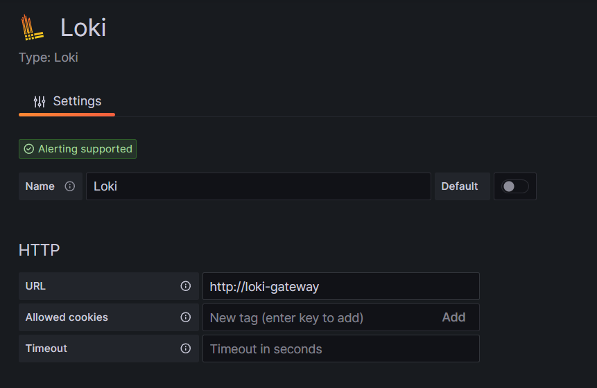

Loki — это открытая платформа для сбора, индексации и хранения логов. Позволяет проводить отладку и выявлять проблемы в системе на основе анализа и мониторинга данных логов.
Перед установкой Loki убедитесь, что настроены средства мониторинга.
В статье рассмотрим:
- установку сервиса Loki с помощью чарта. Это универсальный вариант, который можно применить при любой используемой платформе Kubernetes;
- настройку модуля Loki, встроенного в платформу Deckhouse.
Установка Loki состоит из пяти этапов:
- Загрузить Helm-чарт и конфигурационный файл.
- Создать бакеты в minio.
- Заполнить конфигурационный файл.
- Установить чарт Loki с помощью Helm в Kubernetes-кластер.
- Настроить подключение Loki в источниках данных Grafana.
Начало внимание
При установке Loki + Tempo начните с аддона Loki. Это позволит сохранить настройки кросслинков, так как изначально прописываются настройки Datasource.
Конец внимание
Шаг 1: Загрузить Helm-чарт и конфигурационный файл
Для установки через интернет получите конфигурационный файла values-loki.yaml, выполнив команду:
helm repo add elma365 https://charts.elma365.tech
helm repo update
helm show values elma365/loki > values-loki.yaml
Получение конфигурационного файла для установки в закрытом контуре без доступа в интернет
helm repo add elma365 https://charts.elma365.tech
tar -xf loki-X.Y.Z.tgz |
Шаг 2: Создать бакеты в MinIO
1. Создайте alias для MinIO:
mc alias set my_alias http://minio.local accessKey secretKey
2. Создайте бакеты с наименованиями admins, chunks и rules, выполнив команду:
mc mb -p my_alias/admin --region=ru-central-1
mc mb -p my_alias/chunks --region=ru-central-1
mc mb -p my_alias/rules --region=ru-central-1
Шаг 3: Заполнить конфигурационный файл
Заполнение конфигурационного файла values-loki.yaml для установки Loki
|
loki: |
Шаг 4: Установить чарт Loki с помощью Helm в Kubernetes-кластер
Выполните установку чарта Loki в namespace monitoring.
Для установки через интернет:
helm upgrade --install -n monitoring loki elma365/loki -f values-loki.yaml
Для офлайн-установки без доступа в интернет перейдите в каталог с загруженным чартом и выполните команду:
helm upgrade --install loki ./loki -f values-loki.yaml -n monitoring
Шаг 5: Настроить подключение Loki в источниках данных Grafana
Источник Loki добавляется в Grafana автоматически при установке. Проверить его можно в меню администратора Home > Administration > Data source или Home > Connections > Data sources.
Для добавления вручную в поле URL укажите значение http://loki-gateway.

Пример просмотра лога приложения mongodb ({app="mongodb"} |= "error" != "timeout"): 
Настроить Loki в платформе Deckhouse
Если вы используете платформу Deckhouse, установить Loki можно двумя способами:
- загрузить чарт Loki в Kubernetes-кластер, использовав описанную выше пошаговую инструкцию;
- включить встроенный в Deckhouse модуль Loki. При его использовании вы сможете просматривать логи из всех подов кластера в программе Grafana.
Включение модуля Loki в платформе Deckhouse выполняется с помощью следующего кода:
kubectl apply -f - <<EOF
# Настраиваем сбор логов со всех подов
apiVersion: deckhouse.io/v1alpha1
kind: ClusterLoggingConfig
metadata:
name: all-logs
spec:
type: KubernetesPods
destinationRefs:
- d8-loki
---
# Включаем модуль Loki и настраиваем параметры хранения данных
apiVersion: deckhouse.io/v1alpha1
kind: ModuleConfig
metadata:
name: loki
spec:
settings:
storageClass: localpath-deckhouse-system
diskSizeGigabytes: 30
retentionPeriodHours: 168
enabled: true
version: 1
---
# Включаем модуль log-shipper
apiVersion: deckhouse.io/v1alpha1
kind: ModuleConfig
metadata:
name: log-shipper
spec:
version: 1
enabled: true
EOF